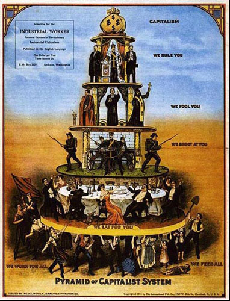
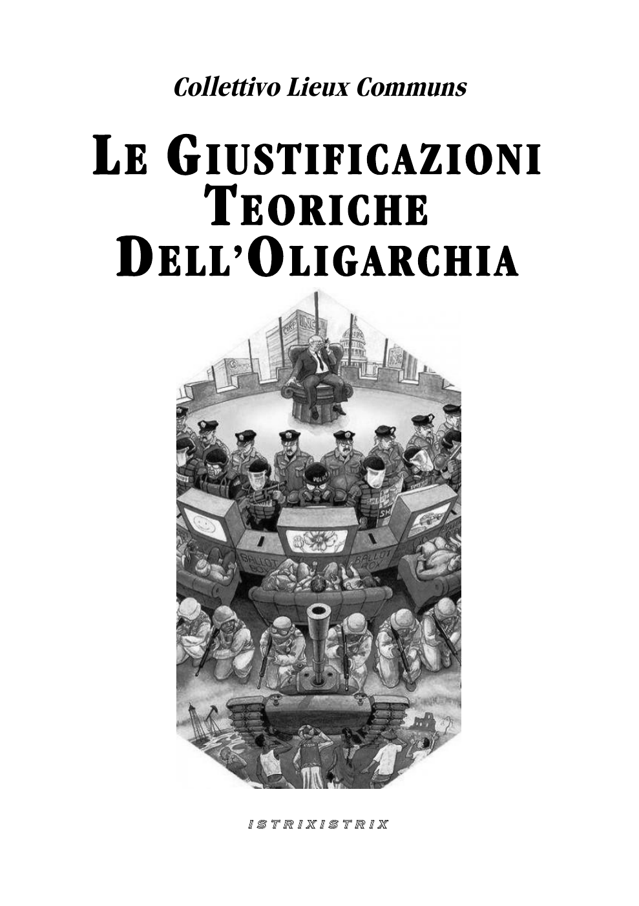
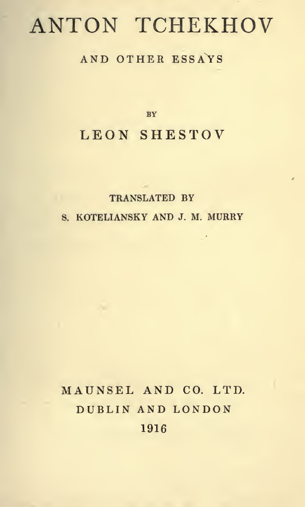

38:16 · 5 OPERE
Cenni sulla struttura delle società del potere.
Il filo del discorso
Il relatore propone uno schema delle società del potere per interrogare la distanza fra il nome democrazia e la distribuzione effettiva delle decisioni. Dalle piramidi sociali antiche e dalla caricatura del capitalismo passa a distinguere sistema politico, personale che lo sostiene, forze armate, amministrazione, scuola, polizia e mezzi di comunicazione. Nella sua rappresentazione i media occupano una posizione decisiva perché pochi volti possono raggiungere un pubblico molto vasto. Il popolo appare alla base, mentre il pensiero autonomo viene collocato ai margini e contrapposto alla pressione dell’obbedienza. La domanda su dove si trovino i grandi detentori di ricchezza conduce alla tesi di un potere economico posto sopra gli apparati visibili. Cooptazione e selezione negativa diventano le chiavi con cui il relatore interpreta l’ascesa sociale e la difficoltà di mantenere indipendenza morale. Un richiamo a uno studio sui trader introduce il tema del comportamento competitivo; la citazione di John Middleton Murry invita poi a imparare nuovamente l’onestà e a cercare il contatto con l’esperienza umana. La frase del discorso di Calgaco nell’Agricola chiude il contributo come denuncia della distanza fra parole e realtà. La scheda presenta la piramide come modello polemico del relatore e ne distingue le ipotesi dai dati quantitativi e dai casi storici da verificare.
I libri nel discorso

Pyramid of Capitalist System
Identificazione probabile
Manifesto politico: piramide del capitalismo: Riproduzione del manifesto del 1911 conservata nella raccolta Labor Arts: titolo Pyramid of Capitalist System, International Publishing Co., Cleveland. Non è la copertina di un libro.
Immagine originale d’archivio con sacco del denaro al vertice, governanti, clero, soldati, banchetto e lavoratori alla base; titolo e provenienza riscontrati. È propaganda politica storica, non un organigramma empiricamente misurato né la piramide egizia. Non si certifica che sia proprio la variante mostrata dal relatore.
Nota piramide del sistema capitalista descritta, compatibile con il manifesto del 1911; titolo esatto e variante non osservati.
Passaggio 2:07 ↗ · Fonti e libro ↗
Le giustificazioni teoriche dell’oligarchia
Prima pagina dell’opuscolo italiano: Prima pagina autentica dell’opuscolo italiano di 28 pagine, marchio Istrix Istrix, conservato dal collettivo; data editoriale non stabilita dal frontespizio. Il testo francese compare nella brochure 20 del 2013 ed è pubblicato sul sito in due parti dal 30 aprile 2014.
Pagina originale resa dal PDF italiano, con autore collettivo, titolo, illustrazione gerarchica e marchio Istrix Istrix. Non è una copertina inventata né il frontespizio del Leviatano usato nella diversa brochure francese. Nessun ISBN o nome di traduttore è dedotto senza riscontro.
Titolo italiano e collettivo francese Lieux Communs espliciti; versione italiana riscontrata sul sito originale.
Passaggio 3:30 ↗ · Fonti e libro ↗
Costituzione della Repubblica Italiana
Copertina dell’edizione Intra aggiornata al 2023: Intra · 2023 · introduzione di Umberto Vincenti
Copertina autentica del testo integrale, aggiornata alla legge costituzionale 26 settembre 2023 n.1. È successiva al filmato del 2019 e non rappresenta la versione storica letta dal relatore. Umberto Vincenti firma l’introduzione.
Costituzione della Repubblica e articolo 33 espliciti.
Passaggio 4:08 ↗ · Fonti e libro ↗
Anton Tchekhov and Other Essays
Identificazione probabile
Frontespizio: Maunsel, 1916: Frontespizio dell’edizione Maunsel and Co. Ltd., Dublino e Londra, 1916, xviii + 205 pagine, traduzione di S. Koteliansky e J. M. Murry; introduzione di Murry. Pagina 9 del facsimile digitale.
Frontespizio autentico del volume, con titolo, Leon Shestov, traduttori, editore, città e anno. Non è la copertina esterna. La raccolta comprende il saggio su Čechov e altri saggi; non è scritta da Čechov. L’edizione americana del 1916 con titolo Penultimate Words and Other Essays non viene confusa con il frontespizio Maunsel.
Introduzione di John Middleton Murry a raccolta del 1916 su Čechov e Šestov espliciti; passo sull’onestà riscontrato, titolo ricostruito.
Passaggio 34:17 ↗ · Fonti e libro ↗
La vita di Agricola (De vita et moribus Iulii Agricolae)
Identificazione probabile
Volume: Agricola e Germania: Copertina del volume La vita di Agricola. La Germania, BUR, 27 giugno 1990, ISBN 9788817167819, traduzione di Bianca Ceva, introduzione e commento di Luciano Lenaz. Il catalogo corrente dell’editore indica 320 pagine; altri cataloghi riportano 240, non risolte per singola tiratura.
Copertina autentica BUR gialla e azzurra con particolare di oggetto metallico, titolo delle due opere, curatore e traduttrice. Il volume contiene anche la Germania, che non viene contata come citata nel video. Il titolo Agricola è inferito dal passo, non pronunciato; edizione di riferimento non assegnata al filmato.
Tacito e frase sul deserto chiamato pace espliciti; titolo inferito dal passo di Agricola 30,4.
Passaggio 37:31 ↗ · Fonti e libro ↗